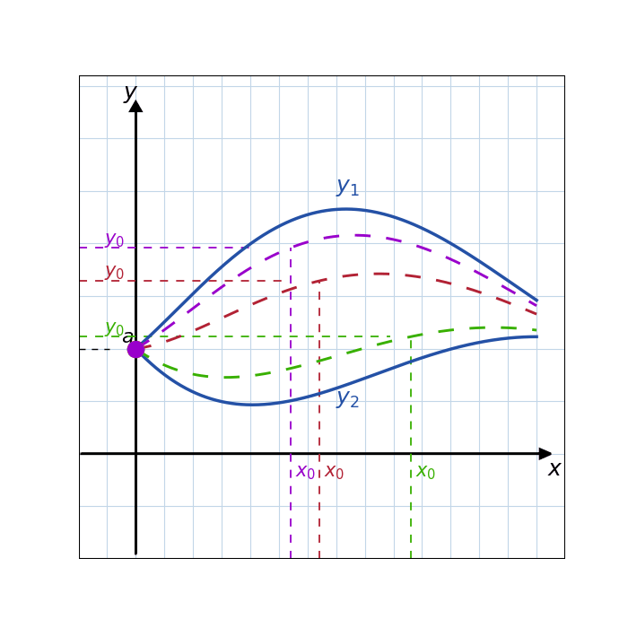

When an initial-value problem satisfies the existence-and-uniqueness conditions, exactly one solution passes through \( (x_{0}, y_{0}) \).
That solution can never cross the solutions \( y_{1}(x) \) and \( y_{2}(x) \), so it stays trapped between them and extends across the whole interval. In the region between \( y_{1} \) and \( y_{2} \) there are infinitely many solutions, all funnelling through the point \( (a, 0) \).
